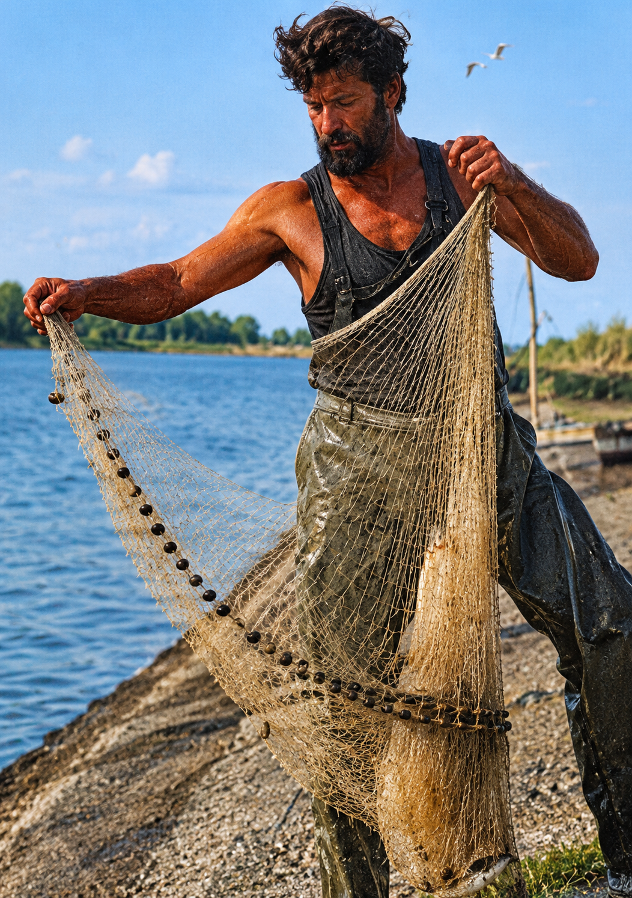
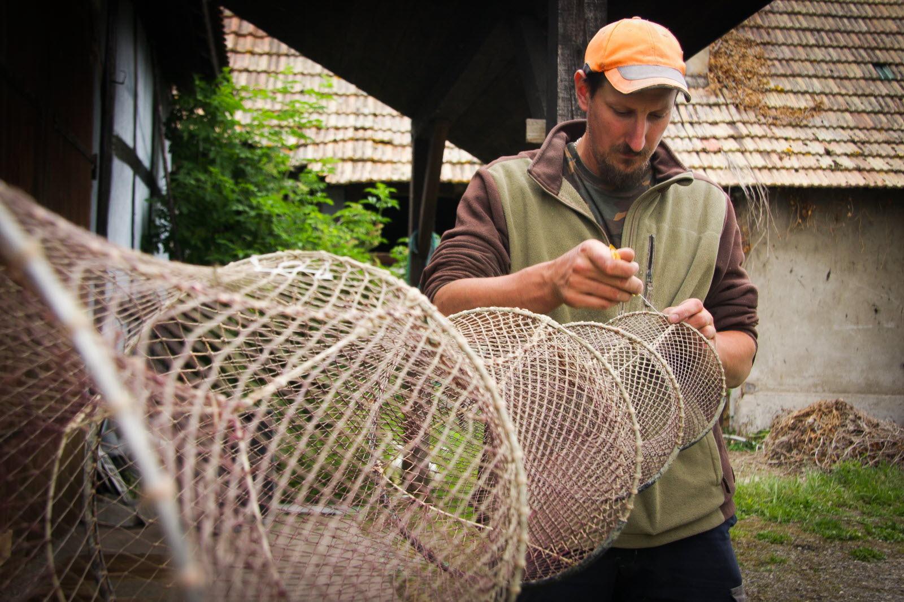
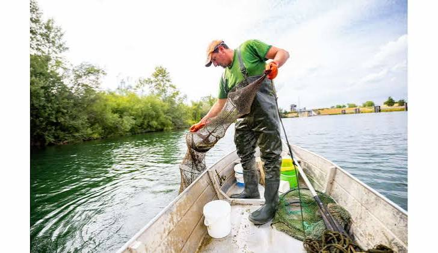
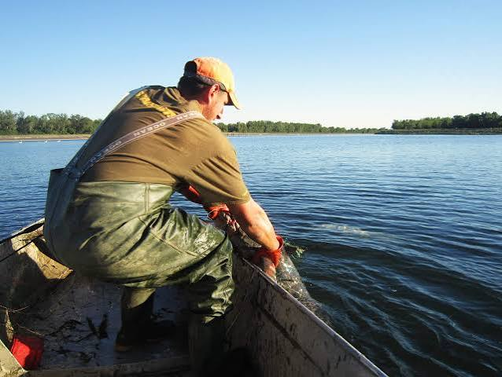

Pour Délices de Nos Rivières, la pêche doit avant tout être sobre, vertueuse et respectueuse de la nature. L’entreprise défend l’idée que le poisson sauvage d’Alsace peut être valorisé dans son intégralité, à condition de maîtriser les bonnes techniques de préparation.
La démarche de l’entreprise repose sur la valorisation des ressources locales et sur une volonté de faire découvrir la richesse de la faune aquatique alsacienne au plus grand nombre. Elle s’inscrit également dans une approche globale de respect des écosystèmes naturels.
Ainsi, l’entreprise veille à éviter toute pêche excessive et respecte strictement les réglementations locales concernant la taille minimale des prises et les quotas. Elle s’engage également à promouvoir une pêche respectueuse du bien-être animal, réalisée sans cruauté.
Au-delà de la production, l’entreprise souhaite également sensibiliser les consommateurs aux écosystèmes aquatiques locaux, aux différentes espèces de poissons présentes en Alsace et aux pratiques de pêche durables.
Cette transmission des connaissances est essentielle pour préparer les générations futures aux défis environnementaux et climatiques. Face à des ressources naturelles limitées, il devient indispensable d’en comprendre les enjeux et de les préserver durablement.



Dans le Haut-Rhin elle a longtemps été en voie de disparition. Elle a pourtant connu une véritable renaissance en 1988, lorsque Adrien Vonarb a relancé cette activité traditionnelle. C’est dans cette dynamique qu’est née la marque Délices de Nos Rivières, dont l’objectif est de valoriser les produits issus des lacs et rivières alsaciennes.
Depuis 2019, l’entreprise est dirigée par Jérémy Fuchs, qui a repris l’enseigne et contribué à renforcer sa reconnaissance à l’échelle régionale. Aujourd’hui, l’entreprise fournit aussi bien des grandes surfaces que des restaurants de prestige. Grâce à une connaissance approfondie des milieux aquatiques, l’activité s’inscrit dans une approche respectueuse de l’environnement et de la biomasse.
Chez Délices de Nos Rivières, nous considérons qu’il n’existe pas de poissons nobles : toutes les espèces peuvent être valorisées et consommées, qu’il s’agisse de poissons carnassiers ou herbivores. Les poissons carnassiers ne représentent d’ailleurs qu’environ 15 % de la population totale. Cette vision permet de valoriser la diversité des espèces présentes dans les eaux alsaciennes.
Afin de limiter le gaspillage et de proposer des produits accessibles au plus grand nombre, l’entreprise dispose également d’un atelier de transformation. Celui-ci permet de transformer l’intégralité du poisson en différentes préparations artisanales telles que des tourtes, des quiches, des terrines ou encore des rillettes fraîches. Cette démarche s’inscrit dans une volonté de proposer des produits sains, sans additifs ni conservateurs.
L’activité repose également sur une pêche responsable, qui vise à préserver l’équilibre naturel des lacs et des rivières d’Alsace. Pour cela, des filets à grandes mailles sont utilisés afin de ne capturer que les poissons les plus matures et de préserver le renouvellement naturel des populations.